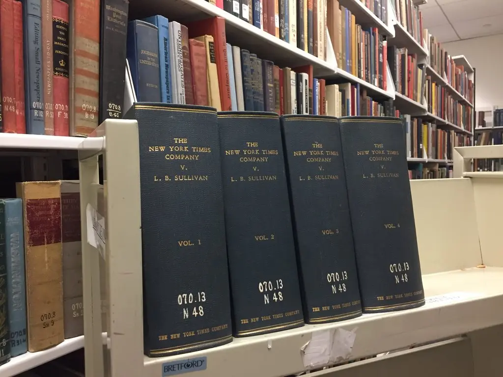

The Advertisement
 In 1960 civil rights activists purchased a full-page ad for approximately $4800 from the New York Times Company.
The ad was titled ‘Heed Their Rising Voices’ and it began by describing the terror that non-violent student
demonstrators were experiencing. They proceed to describe the alleged events in the succeeding paragraphs of
the advertisement. The advertisement concluded with an appeal for funds to support three causes. The first was
to support the student movement, ‘the struggle for the right-to-vote,’ and the legal defense of Dr. Martin Luther
King, Jr. who was facing a perjury indictment.
In 1960 civil rights activists purchased a full-page ad for approximately $4800 from the New York Times Company.
The ad was titled ‘Heed Their Rising Voices’ and it began by describing the terror that non-violent student
demonstrators were experiencing. They proceed to describe the alleged events in the succeeding paragraphs of
the advertisement. The advertisement concluded with an appeal for funds to support three causes. The first was
to support the student movement, ‘the struggle for the right-to-vote,’ and the legal defense of Dr. Martin Luther
King, Jr. who was facing a perjury indictment.
The Law Suit
The city Public Safety Commissioner, L.B. Sullivan felt the ad’s criticism reflected on him, so he sent a written
request to the Times to publicly retract the information. The Times refused his request and so Sullivan filed a libel
action against the Times and a group of African American ministers mentioned in the ad. Libel is a published false
statement that is damaging to a person’s reputation, a written defamation. The advertisement did in fact have some
false statements.
The Details
The advertisement was made up of a total of 10 paragraphs and it openly criticized the Montgomery, Alabama police
department. The third and a portion of the sixth paragraph were the basis for Sullivan’s claim of libel. In the
third paragraph the ad tells the story of students singing ‘My Country, ‘Tis of Thee’ on the State capitol steps
and what followed was their leaders being expelled and truckloads of police ringed the Alabama State College campus.
The entire student body protested by refusing to re-register, so their dining hall was padlocked. What took place was
the students did gather but they sang the National Anthem, and 9 students were expelled but they were expelled for an
incident that took place on another day at a lunch counter. Most of the student body did protest the expulsion, but
they did so by boycotting classes on a single day, and the dining hall was never padlocked. The police were near the
campus, but they did not ring the campus and they were not there for the demonstrations on the Capitol steps.

Although Sullivan’s name was not mentioned in the statements, he argued the mention of police in the paragraph referred
to him as the Montgomery Commissioner who supervised the Police Department. Therefore, people would read it as he had
ringed the campus and since the police ringed the campus they were input as padlocking the dining hall which would be
read as he padlocked the dining hall to starve the students.
In the sixth paragraph the advertisement describes the intimidation and violence Dr. King and his family had been
subjected to. They describe his home being bombed almost killing his wife and child. They claim Dr. King was
arrested seven times, when in fact he had been arrested four times. Sullivan claims that since police are typically
the ones to make arrests when they stated “They have arrested (Dr. King) seven times” it would be read that he
arrested Dr. King seven times. He also argued that ‘They’ who did the arresting would be equated with the ‘They’
who committed the intimidation and violence on Dr. King and his family.
The Ruling
Sullivan made no effort to prove he suffered actual pecuniary loss because of the alleged libel. A jury in state
court awarded Sullivan $500,000 in damages. The State supreme court affirmed the decision and the Times appealed.
The Times argued that the ad was not meant to hurt Sullivan’s reputation and was protected under the First Amendment.
The United States Supreme Court unanimously ruled in favor of the Times, saying the right to publish all statements
is protected under the First Amendment. The court also said in order to prove libel, a public official must show that
what was said against them was made with actual malice.